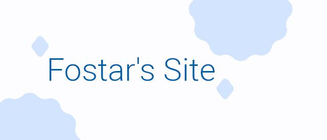

当サークル「上海アリス幻樂団」では、弾幕ＳＴＧを開発したり音楽を作成したりなサークルです。
No description.
这里就是了，友情链接列表（点击图片即可跳转。）
如果您想要添加的话，请邮箱通知 minqwq723897@outlook.com
如果您没有下面这样的图片（大概比例是32:9，或30:9），您也可以不提供，但这样的话我会放一个"No Image Provided"在上面。
当サークル「上海アリス幻樂団」では、弾幕ＳＴＧを開発したり音楽を作成したりなサークルです。 | |
|  | Fostar's webpage No description. |
| No image provided. | Secure's website |